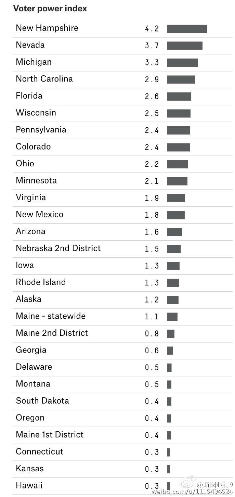

还有一个不知道数学上能不能严格证明（可以请数学好的朋友看看），但感觉上选举人票数少的州成为最终决定你命运那个州的概率，即使按照人口数的反比加权，也低于选举人数多的州。一个极端的例子是，如果只有4个州，选举人票分别是10，10，10，1，那么选举人票数为1的州决定选举结果的概率是0。@斯图亚特9:538网站计算的每个州的单个选民对选举结果的影响力。数字表示这一票能决定选举结果的可能性除以美国每个选民的平均值。一个州的一张票可以值另一个州不知道多少票。 
中国媒体报道美国大选时讲“independent（直译为独立）”选民讲成中间选民，这其实并不准确。选民归属共和党或民主党主要是说通常参加哪个党的党内初选。但不参加两党初选的选民并不是就是左右立场的中间派。其实这些人多数也有固定的左右倾向性，而且是偏共和党的更多（归属民主党的比共和党略多）。
现在到了美国媒体对大选表态的时刻了。经常对大选表态的媒体并不稀罕，但两个并不经常表态的媒体也进行了表态支持希拉里：《大西洋》周刊创办159年以来第三次表态支持某个候选人，前两次是林肯和约翰逊；《USA Today》创办34年以来首次表态（其实是表态反对特朗普）。